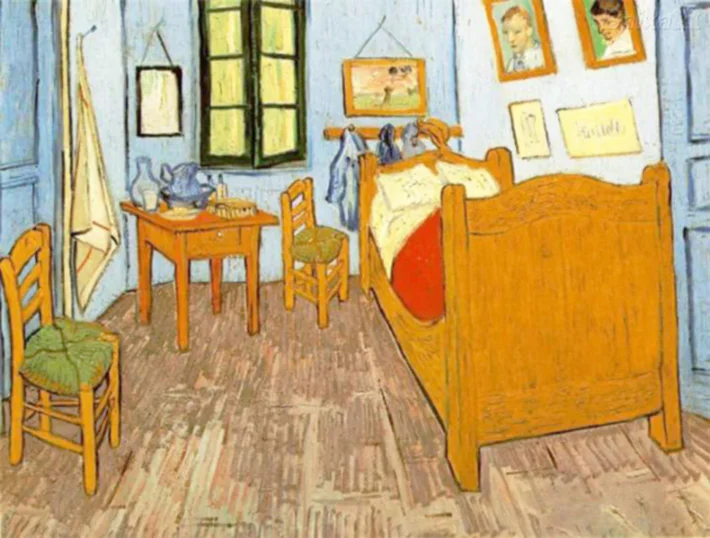

Quarto em Arles
Artista: Vincent Van Gogh
Ano: 1888
Descrição: Van Gogh pintou seu quarto na Casa Amarela, em Arles, utilizando cores fortes e traços marcantes. O ambiente simples, com cama, cadeiras e objetos pessoais, reflete sua busca por tranquilidade e estabilidade emocional. Pós impressionismo.